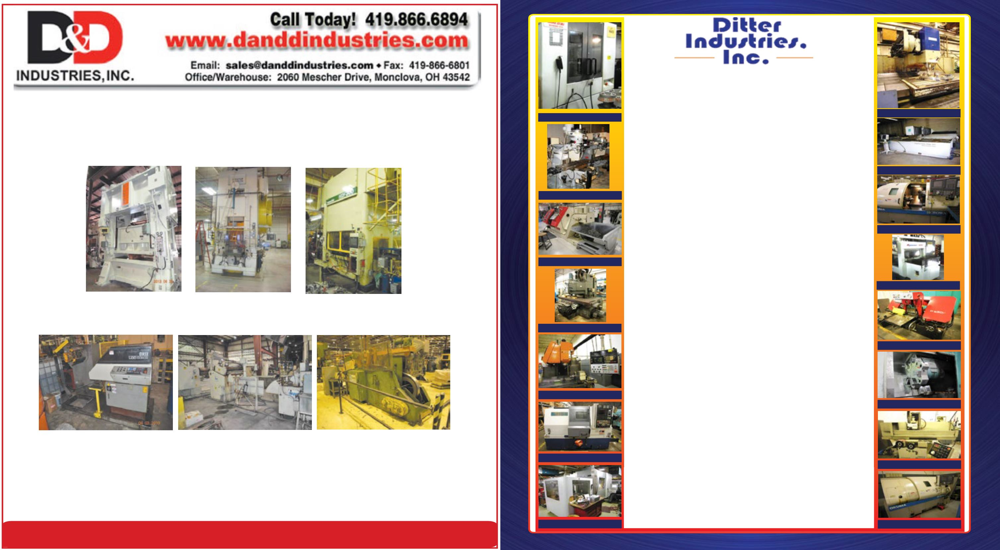

847-265-1075
Plant Liquidations / Appraisals
Okuma 762E
Bridgeports
Gildemeister CTX400
Kitamura My Center One
Cincinnati Vercipower Mill
Mori Seiki NH4000 HMC
Makino FNC-106A20
Armada H650H Saw
Mori Seiki SL-204MC
Nakamura 3BSL
DMG M
d. DMC-75 Linear VMC
Okamoto 820DX
Flow Md. 6012
For Complete Inventory listing please visit
•
•
We Also Have Fabricating Equipment
Johnford Md. VMC-2000SHD
Amada H650H Md. Semi Automatic Badnsaw
, 26" x 16" capacity, 1 1/2" blade,
new 1992
ATS Md. ML565 5’ magazine type bar feeder
,
6 to 67mm cap, Never used
Barrett Chip wringer
,
225 lb. cap, 24” W x 16” deep basket
Bridgeport Trak 2
,
2-axis CNC mills, 48” tables, 2 avail.
Chevalier Md. GU-1140A OD-ID grinder
, 10.6” x 39.4” cap, loaded with tooling,
1
997, Low hours
Cincinnati Vercipower Md. 525-20 Vertical Mill
, 94.5" x 20" table, 50" x 18" x
24" travels, 50 taper, 25 HP, Power draw bar, new 1977
DMG Md. DMC-75V Linear 5-axis VMC
,
29.5”x23.6”x22” travels, 29.5” round table,
18K, HSK63, 120 ATC, Erowa Ten station 12” x 12” pallet system, CTS, Renishaw OMP 60, Heidenha
in iTNC 530, Fargo transformer, approximately 84 Rego Fix tool holders, Rego Fix PowRgrip tool sette
r, new 2006 with 6250 Run hours.
Excel Md. PMC-10T24 VMC
,
39.4” x 20.1” x 22.05” travels, 8000 rpm, side mtd 24 ATC,
Fanuc 21M
First Md. MCV-1060 boxed way VMC
,
41.7” x 21.6” x 25.5” travels, 6000 rpm, 20HP,
side mtd. 24 ATC, Fanuc OM, new 2003
Flow Md. 6012 Flying Bridge Water Jet
, 60” x 144” max sheet, 60,000 psi, 50HP,
Terrain Follower, Garnet pump and recovery systems, Paser CNC, DVD, Dynamic Water Jet option,
2007 with 2,385 hours
Gildemeister CTX 400 CNC lathe
,
5000 rpm, 72mm bore, 27” CC, 12 stations,
chip conveyor, Parts catcher, Shunk 6.1” chuck, Hainbach Collet nose, rebuilt 2006
Hurco BMC 20LR VMC
, 24” x 14” x 16”, 6000 rpm, 16 ATC, Dual screens,
Clean.................................................................................................................................................
$12K
Johnford Md. VMC-2000SHD
,
80.7” x 43.3” x 31.5”, Cat 50, 30HP, Rigid tap, Fanuc 18M,
new 11/1999
Kalamazoo Cold Saw
, Md. FA350A Full Automatic Non Ferrous Cols Saw, 14” blade,
5 HP
Kitamura Mycenter 1
, New 2000, 13,000 rpm, 20 ATC, Yasnac i80MB
Kitamura Zero Spark Changer VMC
,
8K, 16 ATC, Rotary APC, Yasnac i80, new 1997
Kitamura Zero VMC
,
12” x 10” x 12” travels, 8000 rpm, BT30, 16 ATC, Rigid tap, Yasnac
MX-3, 1994
Makino FNC-106A20 4-axis VMC’s
,
2-avail, 41” x 26” x 22”, 3500 rpm, 20HP, 20 ATC,
Cat 50, Fanuc 6M, Tsudakoma RNCM-301P rotary table. Clean machines!
Mazak QT10N Universal CNC lathe
,
Parts Catcher, 20 hp, 2 ½” hole, Flex-E-On
Precision collet nose, 8 station turret, T-2. Clean machine. .............................................................
$12K
Mitutoyo
Md. RA-120 Precision Roundness Tester - Used once!
Miyano Md. BNC-34T
,
1 5/16” bar cap, 5K, 6 position upper and rear turrets, Parts catcher,
Fanuc OT
Moore
#3 Jig Borer, DRO’s, Collets, 1975
Mori Seiki NH4000 HMC
, 15.7” sq pallets, 22” x 22” x 26” travels, 14K, Cat 40, 1-degree,
40 place ATC, MSX-501, new 2005 Mori Seiki SL-204MC, 8” 3-jaw, 2.590” bar cap, 24.3” centers,
4500 rpm, MSX-803 MAPPS, parts
catcher, Programmable tool setter, Turbo CC, PMCi memory card, Prog. Tailstock, air blow measure,
‘01
Nakamura Slant 3BSL CNC lathe
,
3500 rpm, 25HP, 2.5” bar cap, 12 stations,
tailstock, 10” 3-jaw, Fanuc 11TE. Clean.
Okuma LR-15M
,
5-axis, 2.44” spdl bore, 4200 rpm, 2-ranges, 24.41” Z travel, 22HP, Tailstock,
Chip c., 8” SMW AutoBloc chuck, 9 live tools, tapping head, tool blocks, OSP-5020L, full C axis, 1994,
10 station upper and 8 station lower turret, Excellent condition.
Okuma Md. 762-SB
,
21.65" swing x 20.47" centers, 8" chuck, 2.44" bore, 4200rpm, 18/10
HP, Auto door, OSP-700L, Henning CC, new 1998
Okuma md. 762E
,
8" chuck, 2.44" bore, 4200 rpm, 12/7.3 HP, Auto Door, OSP-700L, Hennig
CC, 1998
Okamoto Md. ACC-8.20DX
, Servo Auto DF, Overhead wheel dresser, coolant with
Magnetic sep. Fine pole chucks, (4) available, 1992, 1995, two 2003’s
VDi 30
Live Tool Holders
Okumda 762S- SB
D & D Industries, Inc. is a used equipment dealer specializing in metalworking equipment.
We are interested in any and all surplus equipment that is available for sale including entire
plants. If there is a particular machine that you cannot find, we would be happy to assist you
in locating such a machine.
800 TON MINSTER
KNUCKLE JOINT PRESS
10,000 LB x 12" x .250 DALLAS
SERVO FEED LINE
20,000 x 42" x .093 COOPER
WEYMOUTH PETERSON SERVO
FEED LINE
4400 lb. x 12" x 0.125 ORII SERVO
FEED LINE
600 TON MINSTER SSDC
PRESS
330 TON KOMATSU
SERVO DRIVE 2 POINT
PRESS
And much, much more!!!